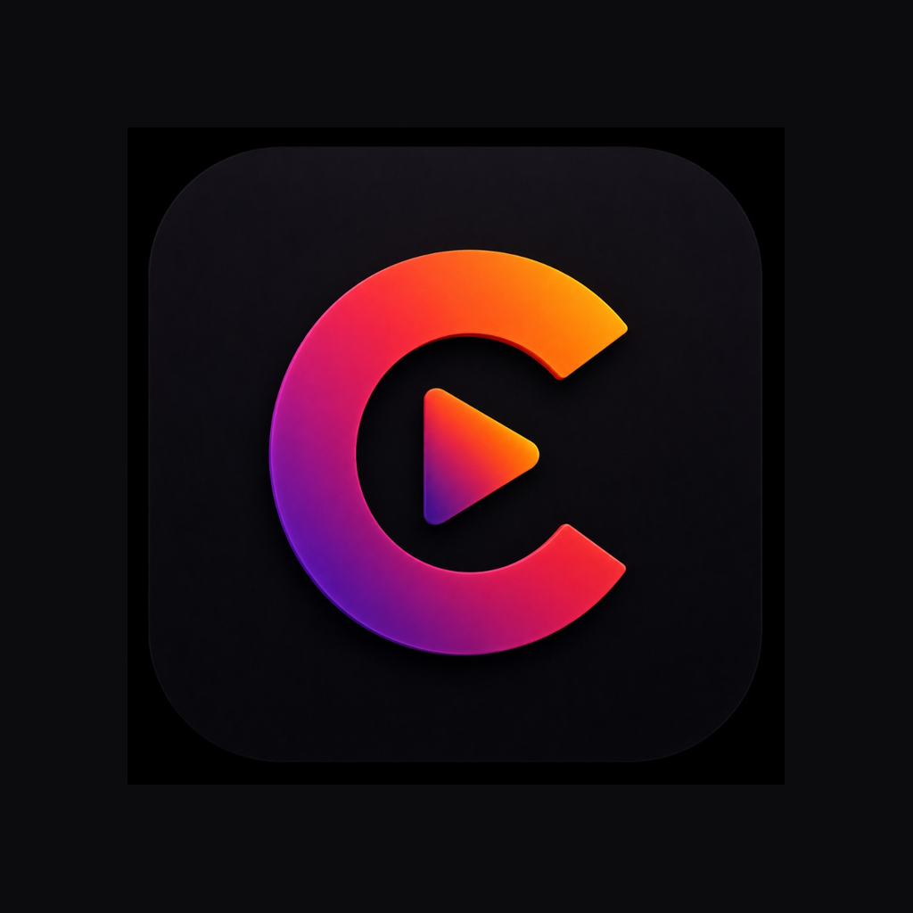

CineShade
Dim streaming apps when brightness won’t listen.
A touch-through screen shade for Android — watch darker without fighting the player.
Get it on Google PlayAndroid · No account · Overlay dimmer

Dim streaming apps when brightness won’t listen.
A touch-through screen shade for Android — watch darker without fighting the player.
Get it on Google PlayAndroid · No account · Overlay dimmer